Hari Ini Aku Bisa …
Centang kalau kamu sudah merasa bisa di akhir pelajaran (centangmu tersimpan di peramban ini).
🔥 Kampanyemu Sepi? Yuk Cari Tahu Kenapa
Di pertemuan pertama kamu sudah membuat poster, infografis, atau video. Keren! Tapi bayangkan ini: posternya sudah dibagikan ke grup kelas, hanya 20 orang yang lihat, dan hampir tidak ada yang ikut kerja bakti. Lho, kenapa?
Mungkin pesannya kurang jelas. Mungkin kanalnya salah. Mungkin angka di grafiknya bikin bingung, atau fotonya dipakai tanpa izin. Hari ini kamu naik level: dari pembuat konten menjadi perancang kampanye yang bisa membuktikan karyanya berdampak.
🧭 Naik Level #1: Pikirkan A-P-K-F Dulu
Sebelum membuka aplikasi, jawab empat pertanyaan ini. Singkatannya A-P-K-F:
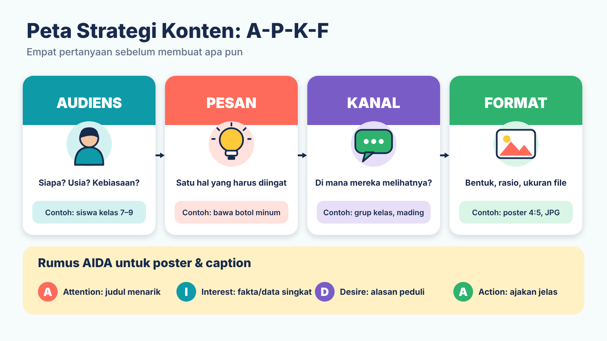
- Audiens → siapa yang mau kamu ajak? (misalnya siswa kelas 7–9)
- Pesan → satu hal yang harus mereka ingat (misalnya “bawa botol minum sendiri”)
- Kanal → di mana mereka biasa melihatnya? (grup kelas, mading, akun sekolah)
- Format → bentuk, rasio, dan ukuran file yang cocok dengan kanal itu
Lalu tulis captionnya dengan rumus AIDA: Attention (judul yang menarik), Interest (fakta atau data singkat), Desire (alasan kenapa mereka perlu peduli), dan Action (ajakan yang jelas, misalnya “Daftar ke Ketua OSIS sebelum Jumat”).
📊 Naik Level #2: Ukur Dampaknya
Bagaimana tahu kampanyemu berhasil? Jawabannya: angka. Ada empat angka yang perlu kamu kenal:
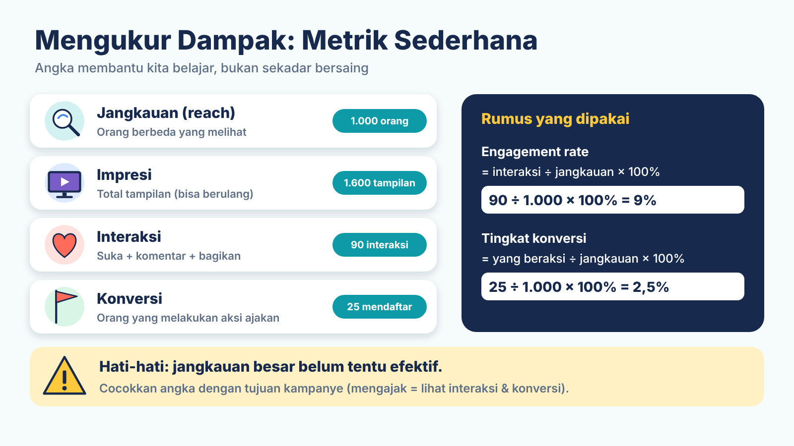
| Istilah | Artinya | Contoh |
|---|---|---|
| Jangkauan (reach) | Jumlah orang berbeda yang melihat kontenmu | 1.000 orang |
| Impresi | Total berapa kali konten tampil (satu orang bisa melihat lebih dari sekali) | 1.600 tampilan |
| Interaksi | Suka + komentar + dibagikan | 90 interaksi |
| Konversi | Orang yang benar-benar melakukan ajakanmu | 25 orang mendaftar |
Rumus favorit para kreator: Engagement rate = interaksi ÷ jangkauan × 100%. Dari contoh: 90 ÷ 1.000 × 100% = 9%. Tingkat konversinya: 25 ÷ 1.000 × 100% = 2,5%.
🔁 Naik Level #3: Uji A/B dan Siklus Perbaikan
Kreator hebat jarang puas pada percobaan pertama. Mereka mengulang siklus Buat → Ukur → Pelajari → Perbaiki. Salah satu caranya adalah uji A/B: membuat dua versi yang hanya berbeda satu hal (misalnya judulnya), lalu melihat versi mana yang hasilnya lebih baik.
Kenapa hanya satu hal? Karena kalau kamu mengubah judul, warna, dan gambar sekaligus, kamu tidak akan tahu mana yang membuat hasilnya lebih baik.
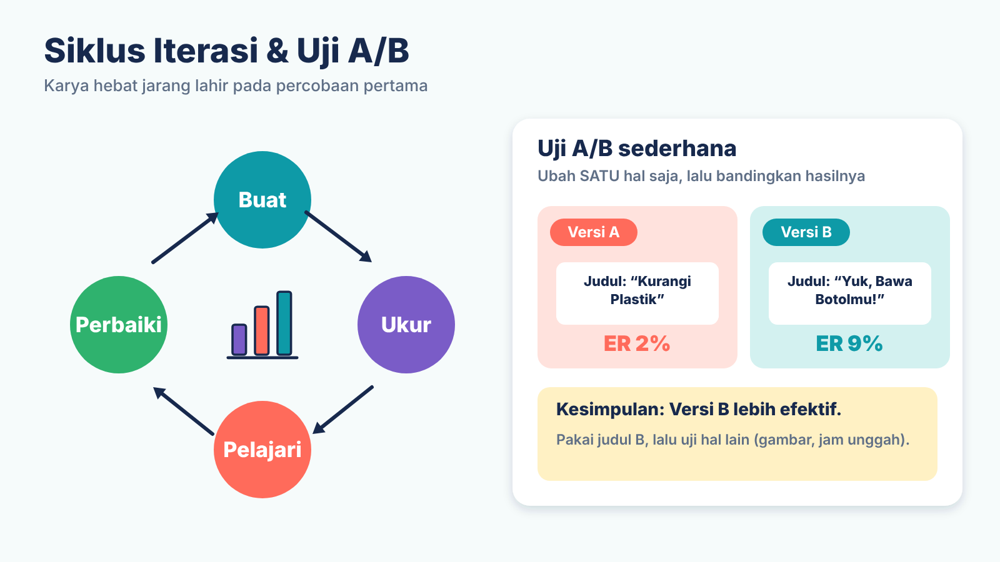
🚪 Misi 4 Stasiun
Kelompokmu akan berputar ke empat stasiun, 11 menit tiap stasiun. Di setiap stasiun ada kartu tugas dan kamu harus memecahkan misi bersama.
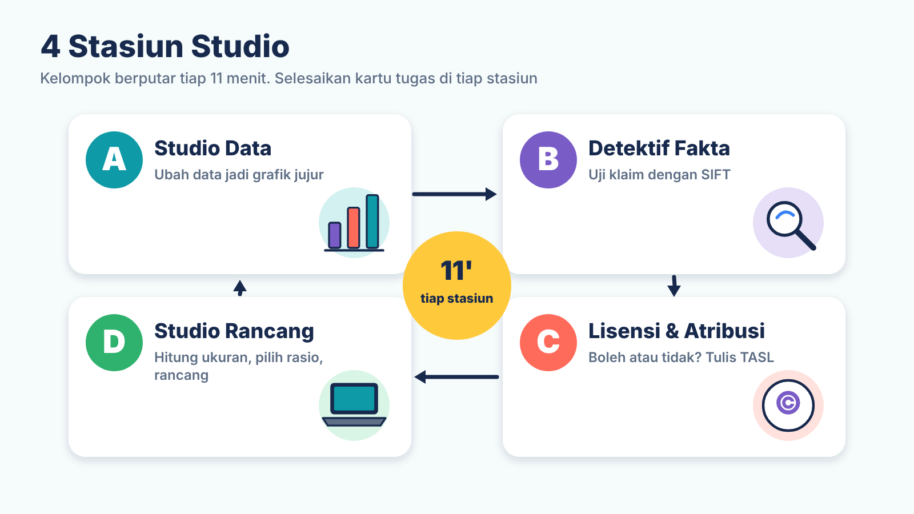
| Stasiun | Misimu | Hasil yang dikumpulkan |
|---|---|---|
| A. Studio Data | Mengubah data menjadi grafik yang jujur | Grafik + judul berpesan |
| B. Detektif Fakta | Menguji 3 klaim dengan SIFT | Tabel vonis + alasan |
| C. Lisensi & Atribusi | Memutuskan boleh/tidak dan menulis atribusi | Keputusan + kalimat T-A-S-L |
| D. Studio Rancang | Menghitung ukuran file, memilih rasio, merancang storyboard | Hitungan + rancangan |
📈 Stasiun A: Data yang Jujur
Grafik membuat data mudah dipahami, tapi grafik juga bisa menipu. Lihat dua grafik di atas: datanya sama (92 dan 95), tetapi grafik kiri memulai sumbu dari 90 sehingga batang B tampak 2,5 kali lebih tinggi padahal selisihnya hanya sekitar 3%.
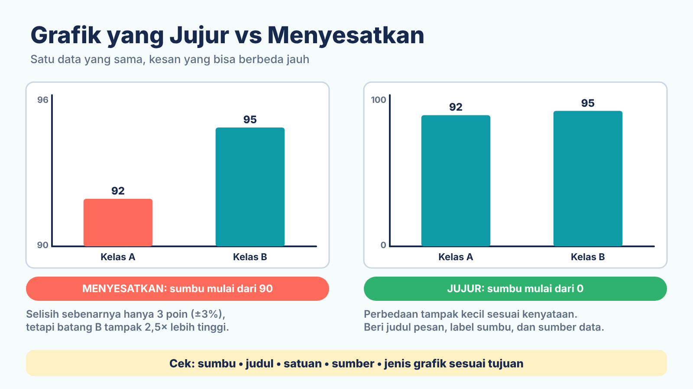
- Sumbu mulai dari 0 untuk grafik batang.
- Judul berpesan, bukan sekadar “Grafik Sampah”. Contoh: “Sampah botol kelas VIII turun 61% dalam 5 hari”.
- Satuan dan label jelas, sumber data dicantumkan.
- Pilih jenis grafik sesuai tujuan: batang untuk membandingkan, garis untuk perubahan dari waktu ke waktu, lingkaran untuk bagian dari keseluruhan (sedikit kategori).
Cara menghitung penurunan: (18 − 7) ÷ 18 × 100% = 61%. Data contoh pada kartu stasiun bersifat fiktif untuk latihan.
🕵️ Stasiun B: Detektif Fakta dengan SIFT
Informasi menyebar cepat, termasuk yang salah. Kamu bisa menjadi “detektif” dengan SIFT:
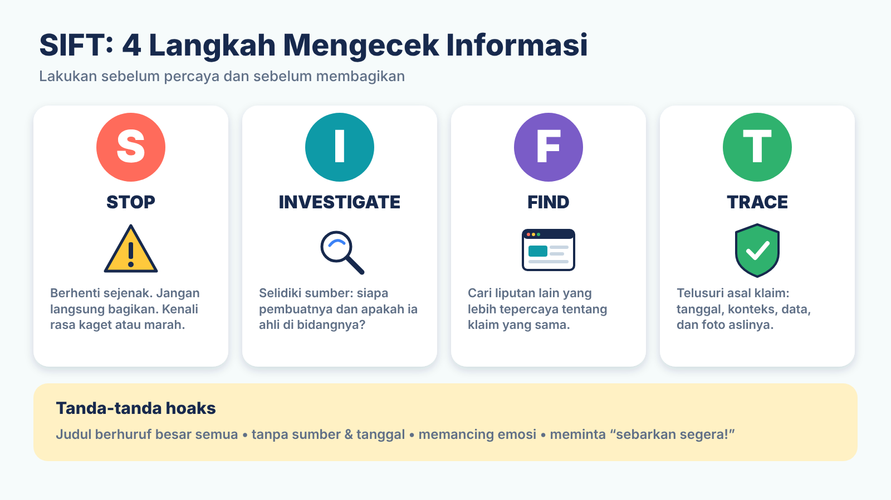
- S – Stop: berhenti sejenak. Jangan langsung percaya atau membagikan, terutama jika pesannya membuatmu kaget atau marah.
- I – Investigate: selidiki sumbernya. Siapa pembuatnya? Apakah ia ahli di bidangnya?
- F – Find: cari liputan lain yang lebih tepercaya tentang klaim yang sama.
- T – Trace: telusuri asal klaim, tanggal, konteks, dan foto atau datanya yang asli.
©️ Stasiun C: Lisensi dan Atribusi
Di pertemuan 1 kamu belajar bahwa karya orang lain dilindungi hak cipta (UU No. 28 Tahun 2014). Naik level: Creative Commons (CC) adalah lisensi yang memberi izin lebih dulu, asalkan kamu mengikuti syaratnya.
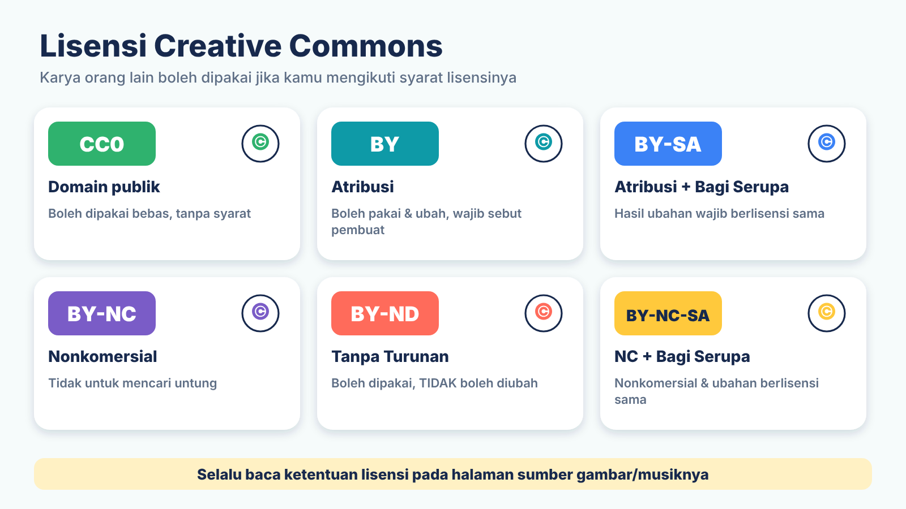
| Lisensi | Boleh? | Syarat |
|---|---|---|
| CC0 | Pakai bebas | Tidak ada syarat |
| BY | Pakai dan ubah | Sebut pembuat (atribusi) |
| BY-SA | Pakai dan ubah | Atribusi + hasil ubahan berlisensi sama |
| BY-NC | Pakai nonkomersial | Atribusi, tidak untuk mencari untung |
| BY-ND | Pakai apa adanya | Atribusi, tidak boleh diubah |
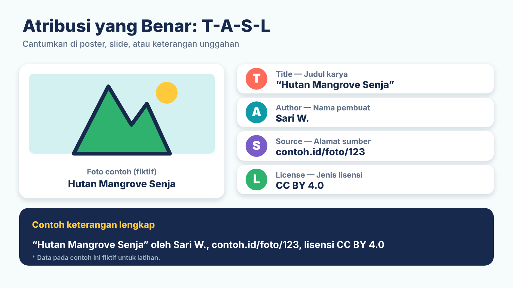
Cara menulis atribusi yang mudah diingat: T-A-S-L (Title, Author, Source, License). Contoh: “Hutan Mangrove Senja” oleh Sari W., contoh.id/foto/123, lisensi CC BY 4.0 (contoh fiktif).
🎛️ Stasiun D: Ukuran File, Rasio, dan Aksesibilitas
Pernah file-mu ditolak karena terlalu besar? Kamu bisa menghitung ukurannya sebelum mengirim:
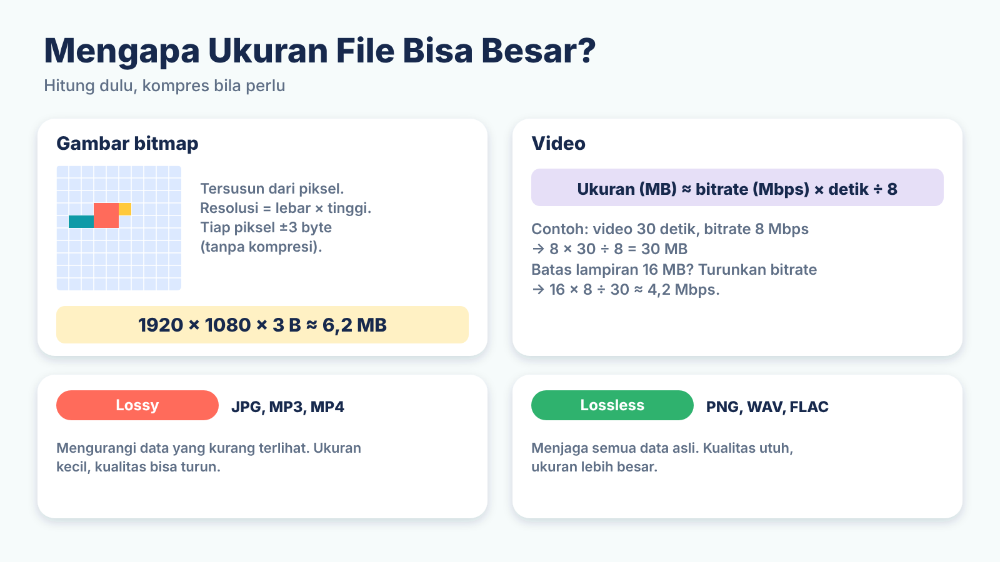
- Gambar bitmap tanpa kompresi: lebar × tinggi × 3 byte. Contoh 1920 × 1080 × 3 ≈ 6,2 MB.
- Video: ukuran (MB) ≈ bitrate (Mbps) × detik ÷ 8. Contoh 8 × 30 ÷ 8 = 30 MB.
- Lossy (JPG, MP3, MP4) mengecilkan ukuran dengan mengurangi detail; lossless (PNG, WAV) menjaga data asli tapi ukurannya lebih besar.
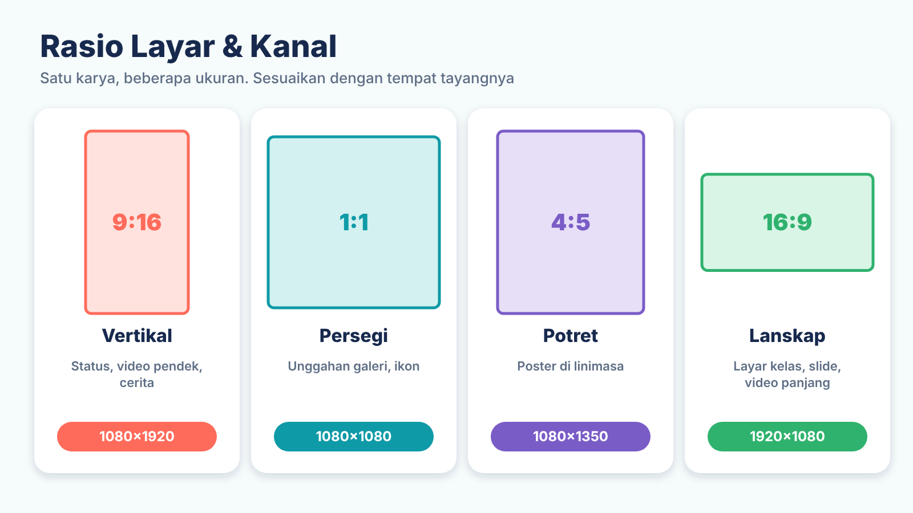
Pilih rasio sesuai tempat tayang: 9:16 untuk video vertikal, 1:1 atau 4:5 untuk unggahan gambar, dan 16:9 untuk layar kelas atau slide. Satu karya bisa dibuat dalam dua ukuran.
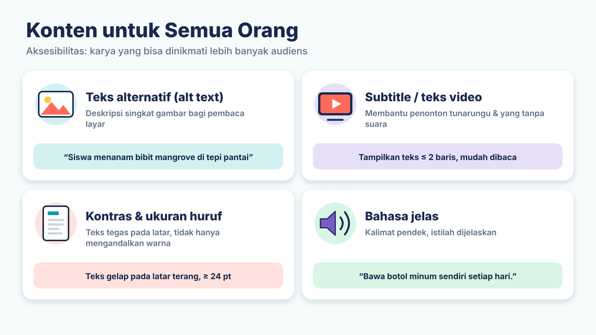
Terakhir, buat karyamu bisa dinikmati semua orang: tambahkan teks alternatif pada gambar, subtitle pada video, kontras huruf yang tegas, dan bahasa yang jelas.
📦 Misi Akhir: Paket Kampanye v2
Sekarang gabungkan semua temuan stasiun untuk memperbaiki karya dari pertemuan 1 menjadi Paket Kampanye v2. Waktu kerja 16 menit.
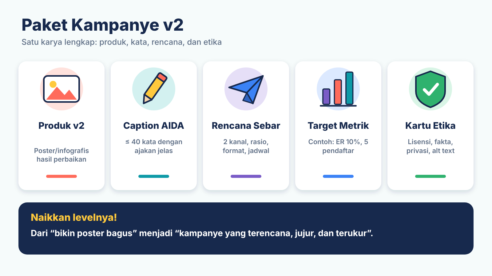
Langkah kerja proyek
- Produk v2: perbaiki poster/infografis/video (grafik jujur, atribusi, kontras).
- Caption AIDA: tulis maksimal 40 kata dengan ajakan yang jelas.
- Rencana sebar: pilih 2 kanal, rasio, format file, dan jadwal.
- Target metrik: misalnya engagement 10% atau 5 orang mendaftar.
- Kartu etika: centang lisensi, fakta, privasi, alt text.
🖼️ Galeri Karya dan Uji 5 Detik
Di galeri, kamu berkeliling melihat karya kelompok lain. Ada dua tugas:
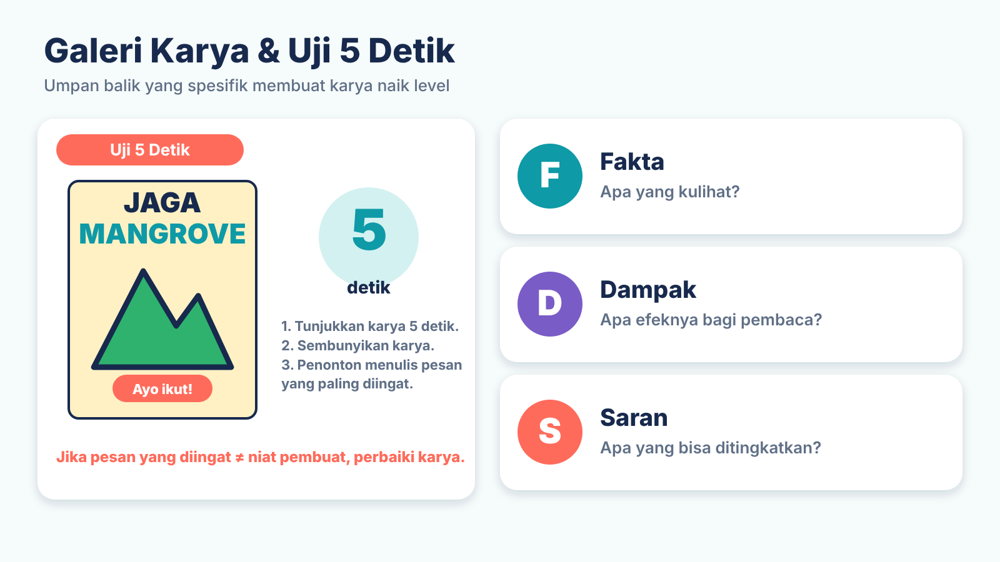
- Uji 5 detik: lihat karya selama 5 detik, lalu tulis pesan yang kamu ingat. Kalau pesannya tidak sama dengan niat pembuat, berarti karya perlu diperbaiki.
- Kartu F-D-S: tulis Fakta (apa yang kulihat), Dampak (apa efeknya bagi pembaca), dan Saran (apa yang bisa ditingkatkan).
Cek Pemahaman: Mini Kuis
Pilih jawabanmu. Jawaban benar akan berwarna hijau.
Rangkuman
- Rancang konten dengan A-P-K-F, tulis caption dengan AIDA.
- Ukur dampak: jangkauan, impresi, interaksi, konversi; engagement rate = interaksi ÷ jangkauan × 100%.
- Grafik jujur: sumbu mulai dari 0, judul berpesan, label dan sumber jelas.
- SIFT: Stop, Investigate, Find, Trace; lisensi CC menentukan apa yang boleh dilakukan; atribusi T-A-S-L.
- Ukuran video ≈ bitrate × detik ÷ 8; pilih rasio dan format sesuai kanal; tambahkan alt text dan subtitle.
- Karya hebat lahir dari siklus Buat → Ukur → Pelajari → Perbaiki.
Kosakata Penting
- A-P-K-F
- Audiens, Pesan, Kanal, Format: empat pertanyaan perancang konten.
- AIDA
- Attention, Interest, Desire, Action: rumus menulis caption/poster.
- Jangkauan
- Jumlah orang berbeda yang melihat konten.
- Impresi
- Total tampilan konten, termasuk yang berulang.
- Engagement rate
- Interaksi ÷ jangkauan × 100%.
- Konversi
- Orang yang melakukan aksi yang diajakkan.
- Uji A/B
- Membandingkan dua versi yang hanya beda satu hal.
- SIFT
- Stop, Investigate, Find, Trace: cara mengecek informasi.
- Creative Commons
- Keluarga lisensi yang memberi izin pemakaian karya dengan syarat tertentu.
- Atribusi (T-A-S-L)
- Mencantumkan judul, pembuat, sumber, dan lisensi karya.
- Bitrate
- Jumlah data per detik pada audio/video (mis. Mbps).
- Alt text
- Deskripsi teks pengganti gambar untuk pembaca layar.
Refleksi
Jawaban refleksi tidak disimpan di server; salin ke buku tugas atau LKPD-mu.